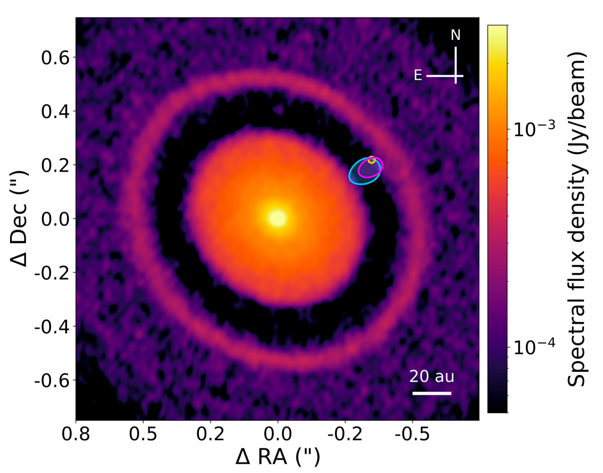

Un equipo internacional liderado por Andrea Bernardi, estudiante de doctorado YEMS en la Universidad Diego Portales, confirmó la existencia de Elias 2-24 b, el exoplaneta más joven detectado hasta ahora. Con una masa similar a la de Júpiter y menos de un millón de años, el planeta todavía está inmerso en el disco de gas y polvo donde se está formando.
Bernardi desarrolla su investigación doctoral como integrante del Núcleo Milenio sobre Exoplanetas Jóvenes y sus Lunas (YEMS), financiado por la Agencia Nacional de Investigación y Desarrollo (ANID) a través de la Iniciativa Científica Milenio. El estudio fue publicado en The Astrophysical Journal Letters y destacado por NASA en su comunicado del 16 de septiembre de 2026.
Representación artística de Elias 2-24 b. Crédito: W. M. Keck Observatory/Adam Makarenko, vía NASA Science.
Un planeta en la brecha de su disco natal
El sistema Elias 2-24 se encuentra a unos 450 años luz de la Tierra. Observaciones de ALMA revelaron una brecha en el disco de polvo que rodea a la estrella; posteriormente, el Very Large Telescope (VLT) de ESO detectó una débil fuente de luz dentro de esa brecha. Faltaba establecer si se trataba realmente de un planeta.
«Los planetas deberían encontrarse dentro de las brechas, ya que son ellos los que las están excavando», explica Bernardi en el comunicado de NASA. «Y es exactamente allí donde encontramos a Elias 2-24 b».
La confirmación en los archivos de Keck
El equipo identificó la misma fuente en observaciones de 2018 y 2020 conservadas en el archivo del Observatorio W. M. Keck, financiado por NASA. Al combinar los datos y seguir su movimiento a lo largo del tiempo, encontró evidencia de que la fuente correspondía a un planeta, y no a un defecto de imagen o una estrella de fondo.
La combinación de ALMA, VLT y Keck permitió conectar la estructura del disco con el objeto que lo está moldeando. El resultado también demuestra el valor de los archivos astronómicos: observaciones obtenidas años atrás pueden aportar la evidencia necesaria para confirmar un nuevo mundo.
Una ventana a la formación de los planetas
Elias 2-24 b se encuentra a una distancia de su estrella equivalente a unas 55 veces la separación entre la Tierra y el Sol. Formar un gigante tan joven y tan lejos de su estrella plantea un desafío para los modelos de formación planetaria. Según NASA, los anteriores poseedores del récord de juventud superaban los cinco millones de años.
El polvo que envuelve a estos mundos dificulta su detección. «En gran medida, seguimos sin poder ver estos planetas bebés», señala Lucas Cieza, coautor del estudio, en el comunicado de NASA.
«Es emocionante sumar otro sistema a la pequeñísima muestra de planetas que podemos estudiar mientras todavía se están formando. Estos sistemas nos dan una oportunidad muy poco común de confrontar los modelos de formación planetaria con el proceso mismo, y no solamente con sus productos finales», señala Sebastián Pérez, investigador YEMS de la Universidad de Santiago de Chile.

Observación de continuo de ALMA a 1,3 mm del programa DSHARP. Las regiones magenta, azul y dorada representan el área que encierra la posición del compañero según los resultados del estudio y trabajos previos. Elias 2-24 b es responsable de la brecha y de la acumulación de polvo en el borde interno del disco exterior. Crédito: Bernardi et al. (2026).
Fuente: NASA Science, “Newfound ‘Baby’ Planet Smashes Record for Youngest Known World”. Las citas del comunicado de NASA se presentan traducidas al español.